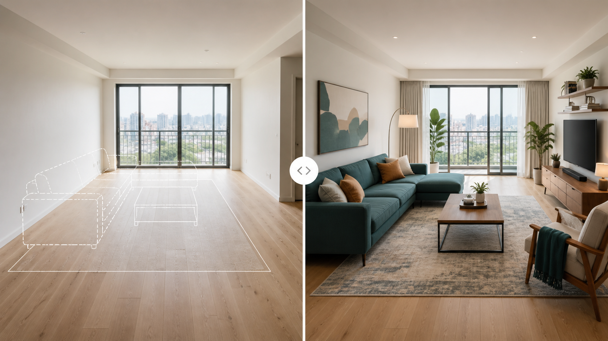

Промтзилла
Подбор мебели по фото лучше работает, если нейросеть не просто украшает комнату, а учитывает планировку, проходы, свет и реальные размеры.

Пошаговая инструкция
- 1Сфотографируй комнату из угла, чтобы были видны стены, окна, пол и свободное пространство.
- 2Загрузи фото в GPT Image в Study24 или другой редактор с поддержкой изображений.
- 3Опиши бюджет, стиль, ограничения по цветам и мебель, которую нельзя двигать.
- 4Попроси 2-3 варианта расстановки и отдельный список предметов.
- 5Проверь проходы, высоту мебели и совпадение с реальными размерами комнаты.
Какой результат просить
Хороший результат выглядит как реалистичная визуализация той же комнаты, где новая мебель не перекрывает проходы и сочетается с отделкой. Для такого сценария можно использовать GPT Image в Study24: загрузи исходные материалы, вставь промт и попроси несколько вариантов.
Промт
RU
Подбери мебель для этой комнаты по фото. Учитывай: — планировку, окна, двери, розетки и проходы; — стиль комнаты и существующую отделку; — реальные пропорции мебели, чтобы предметы не выглядели слишком большими; — удобство хранения, освещение и свободное место для движения. Сделай 3 варианта: 1. бюджетный; 2. уютный современный; 3. более выразительный дизайнерский. Для каждого варианта дай: — что поставить; — куда поставить; — какие цвета и материалы выбрать; — что лучше не покупать для этой комнаты. Сохрани геометрию комнаты и не меняй окна, двери и пол.
EN
Choose furniture for this room based on the photo. Consider: — layout, windows, doors, outlets, and walking paths; — the room style and existing finishes; — realistic furniture proportions; — storage, lighting, and free space for movement. Create 3 options: 1. budget-friendly; 2. cozy modern; 3. more expressive designer version. For each option, provide: — what to place; — where to place it; — colors and materials; — what should be avoided for this room. Keep the room geometry, windows, doors, and floor unchanged.
Важно
Не покупай мебель только по картинке: перед заказом проверь габариты, дверные проёмы и расстояние для проходов.
Теги